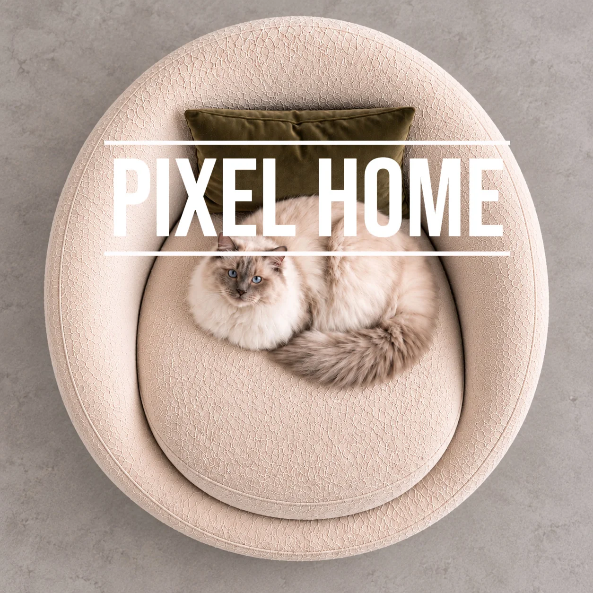
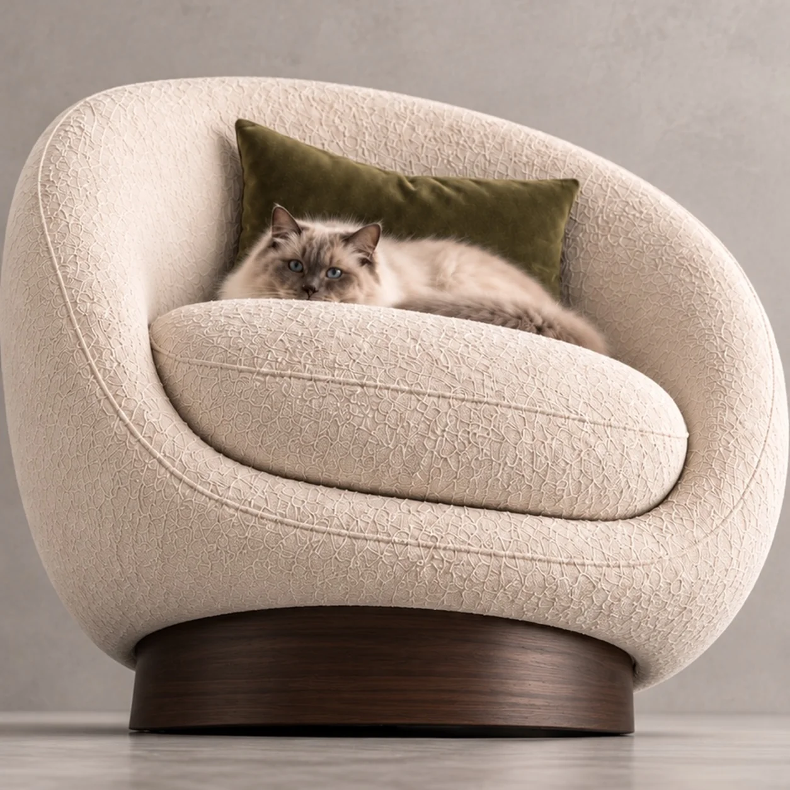
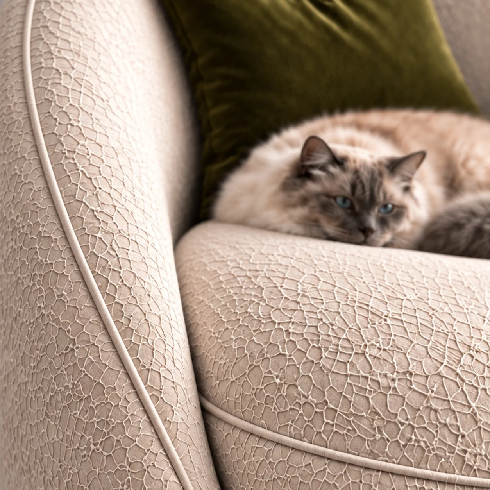
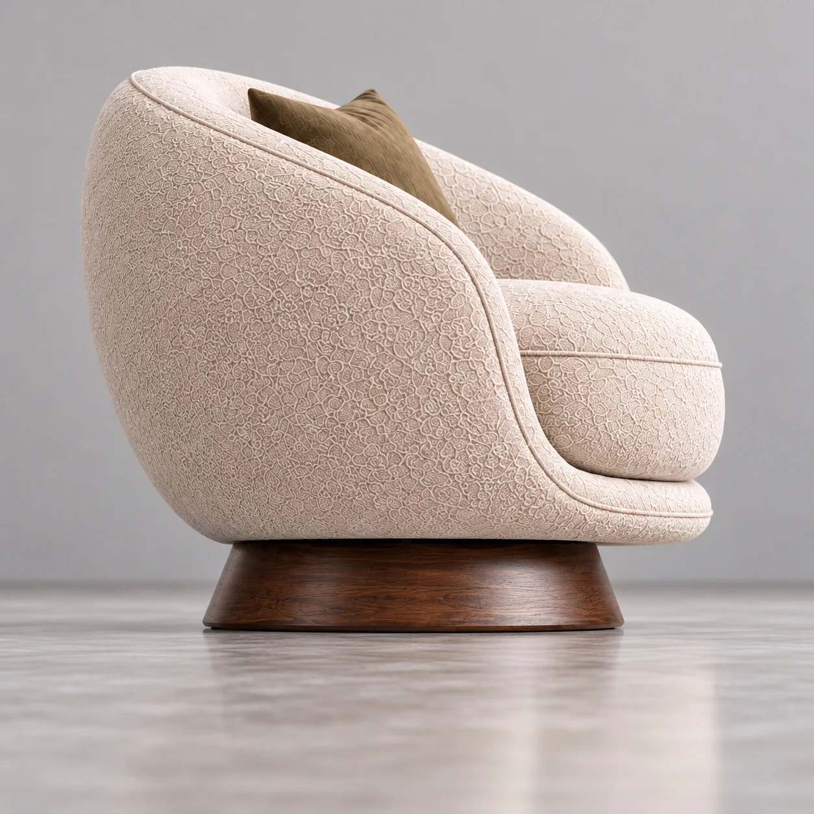
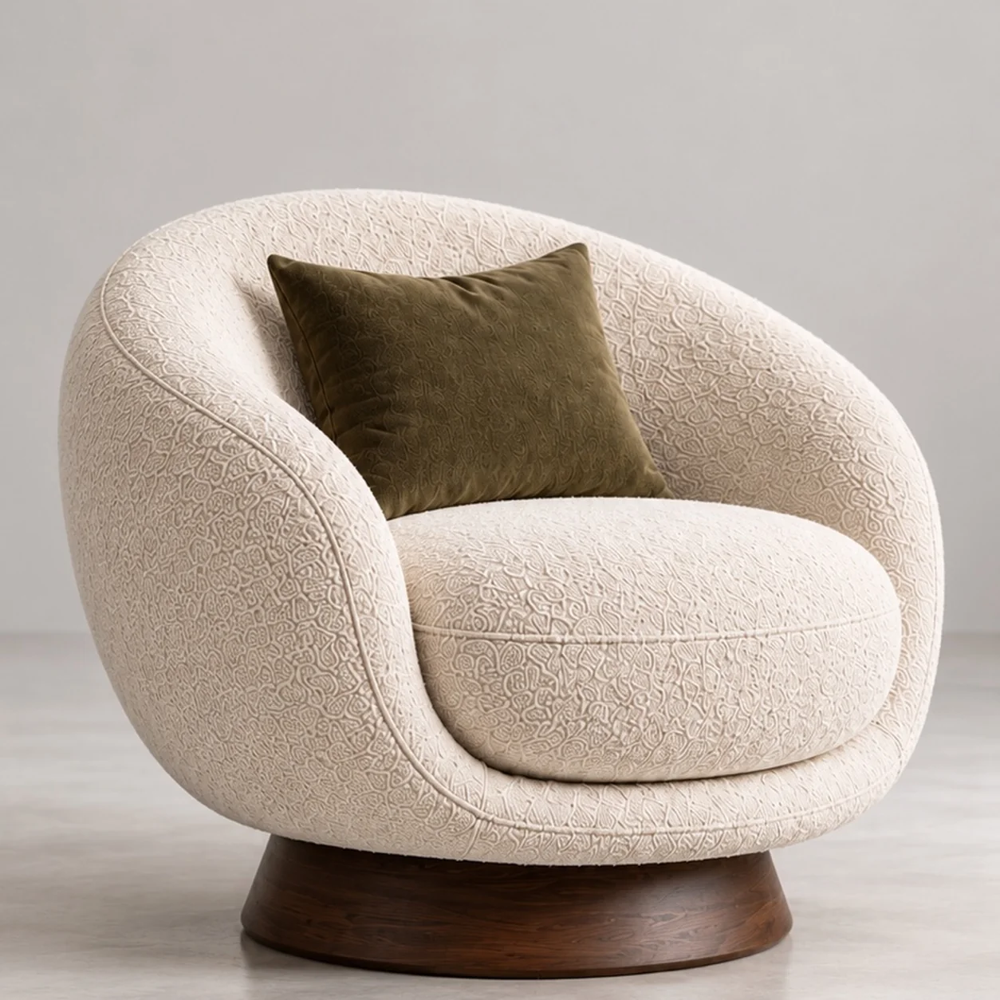

MOBİLYA / BAĞIMSIZ KONSEPT ÇALIŞMA
Konforun Dokusu
Dokulu krem koltuğu, ahşap kaidesi ve kedinin keyifli molasıyla farklı açılardan anlatan bağımsız AI görsel serisi.

PROJE FİLMİ
Konfor, küçük bir tercih.
Kedinin koltuğa yerleştiği 14 saniyelik kısa film. Oynatma ve ses kontrolü sizde.
GÖRSEL SERİ
Bir koltuk, farklı açılar.




BİRLİKTE ÜRETELİM
Sizin ürününüz için nasıl bir hikâye kurabiliriz?
Bağımsız AI konsept çalışması · Marka iş birliği değildir.